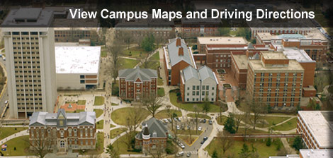

|
|
 reetings!
reetings!I am a Professor of Mathematics at the University of Kentucky. |
|
|
reetings! I am a Professor of Mathematics at the University of Kentucky. |
I am a member of the Discrete Mathematics group in the Department of Mathematics at the University of Kentucky.
My research interests are in algebraic combinatorics, namely the interaction of combinatorics with algebra, topology, discrete geometry and number theory.

My research is supported by
NSF grant DMS-2247382.
Here
are products and activities resulting from this grant.
My current PhD students are Will Gustafson and Ben Reese.
My current undergraduate research students are Krishna Angal, Owen Craig, Mya McDowell, Luke Rogers, Osman Siddiqi and Drake Skeen.
List of all of my students (Postdoctoral, PhD, Masters and Undergraduate Research).

I am co-organizing the
KOI Combinatorics Lectures.
It is funded by the National Science
Foundation NSF DMS 2435236.
First meeting (K) at the University of Kentucky
Spring 2023.
Second meeting (O) at Ohio State University
Fall 2023.
Third meeting (I) at the Indiana University
Fall 2024.
Fourth meeting (K) at the University of Kentucky
Fall 2025.
In Spring and Fall 2025 I am organizing the Discrete CATS Seminar. From 2000 to 2014, and 2017 to Fall 2018, and Spring 2023 I organized this seminar and co-organized the WILDCATS Seminar.
In Spring 2015 I co-organized the Princeton University Combinatorics Seminar.
Interview by Robert Jajcay of Comenius University during EUROCOMB 2019 in Bratislava Slovakia.
On the cover of the March 2018 Notices of the AMS . Christine Taylor and I were guest editors for this special issue for Women's History Month.
U Kentucky public relations interview about the IAS Women and Mathematics program winning the AMS 2019 Award for Mathematics Programs that Make a Difference. Here is the award announcement in the May 2019 Notices of the AMS.
Here is a recent picture of my sons ages 17 + ε and 21 + ε.
|  |
Mailing address:
University of Kentucky
phone +1 (859) 257-4680 |

{kind=link}